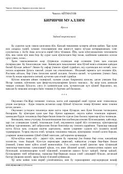

BMMa'rifat yo'lidagi fidoyi ustoz va uning shogirdlari haqidagi ta'sirli qissa.
Ushbu qissa muallimning qishloqdagi ma'rifatparvarlik faoliyati, bolalarning o'qishga bo'lgan intilishi va murakkab hayotiy yo'llari haqida hikoya qiladi. Asarda insoniylik, fidoyilik va ustozga bo'lgan hurmat tuyg'ulari yorqin aks etgan.